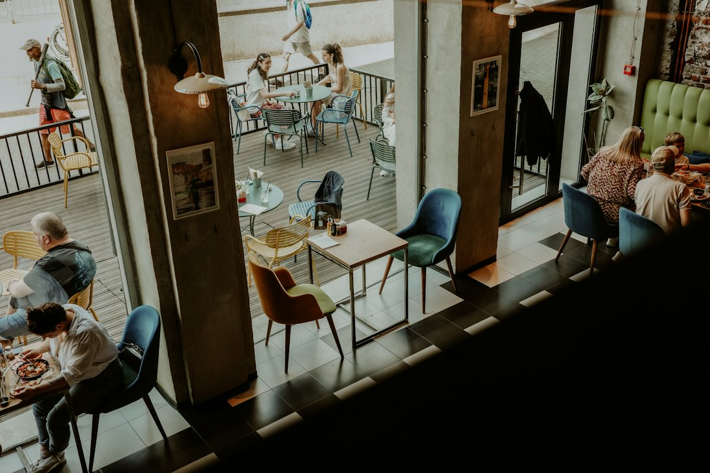
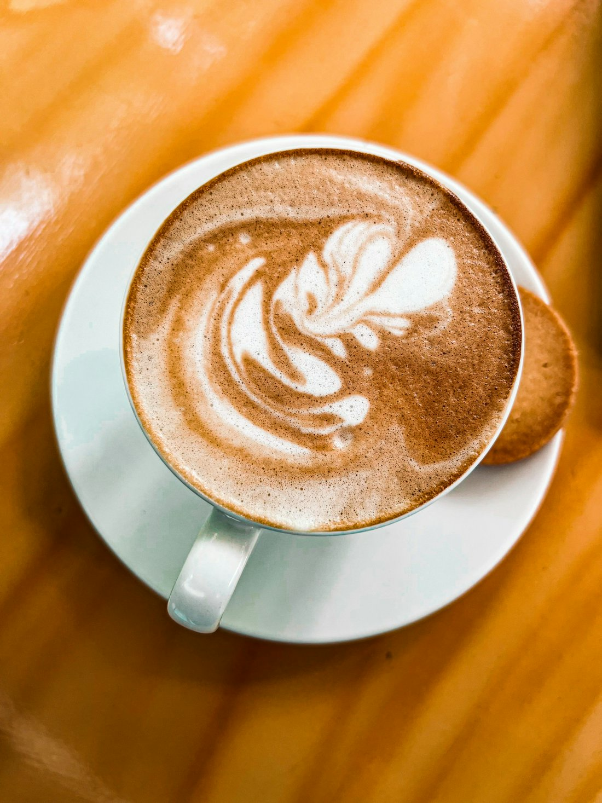

Your slow morning starts here.
Specialty coffee, pastries baked every morning and a quiet table for as long as you need it.
See the menu

Our story
Named after the almond tree outside our door.
Mandula means almond in Hungarian. We opened to be the kind of place your neighbourhood needs: friendly faces, honest prices and coffee made with care. Come to study, catch up with a friend or simply take a moment for yourself.
Menu
Small menu, made well.
Coffee
- Espresso800 FtShort, rich and chocolatey.
- Cappuccino1,200 FtEspresso with silky steamed milk.
- Flat white1,300 FtA double shot with a thin layer of milk.
- Almond latte1,500 FtOur house favourite, with almond milk.
Something sweet
- Butter croissant900 FtBaked fresh every morning.
- Banana bread1,100 FtServed warm, with salted butter.
- Cinnamon roll1,200 FtSoft, sticky and hard to share.
- Almond cake1,300 FtOur signature slice.
Visit us
Come say hi.
Sample Street 1, Budapest
| Monday to Friday | 8:00–18:00 |
| Saturday | 9:00–18:00 |
| Sunday | 10:00–16:00 |